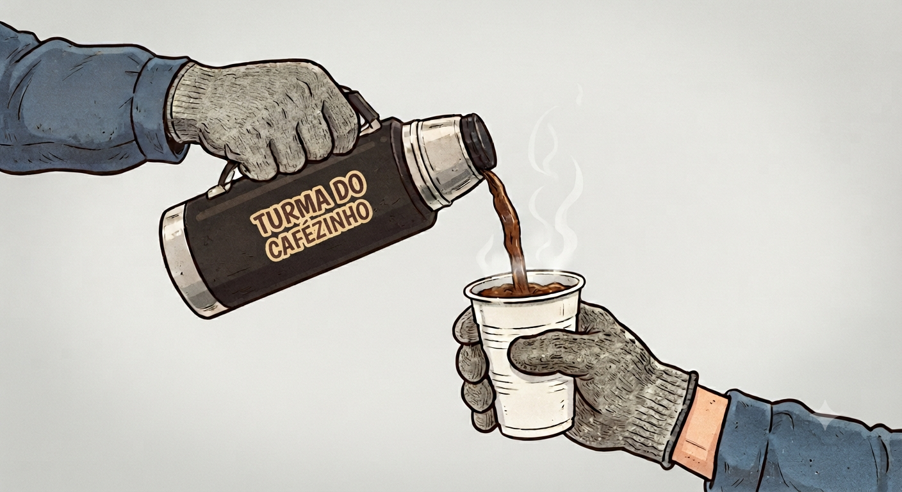

TURMA DO CAFÉ
Cantinho do café
Digite um apelido:
BORA TOMAR CAFÉ
Sem senha. Sem cadastro. Sem regras. Só chegar e falar.
TURMA DO CAFÉ
Sair
🌡️ Termômetro do Turno
Clima: Calmo
Tranquilo
Correria
Caos!
📊 Como está seu Nível de Satisfação no trabalho?
Satisfeito
Não Satisfeito
Mais ou menos
Tanto faz
📷 Foto
Postar no Mural